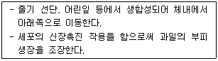
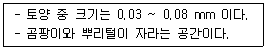
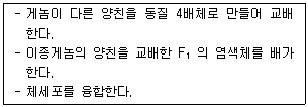
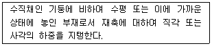
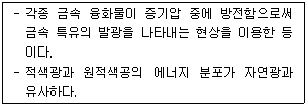
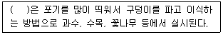
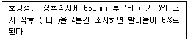

유기농업산업기사 (2017-03-05 기출문제)
1과목: 재배원론
1. 작물이 주로 이용하는 토양수분의 형태는?
- 흡습수
- 모관수
- 중력수
- 지하수
(정답률: 91%)

2. 신품종의 구비조건으로 틀린 것은?
- 구별성
- 독립성
- 균일성
- 안정성
(정답률: 80%)
3. 씨감자의 병리적 퇴화의 주요 원인은?
- 효소의 활력저하
- 비료 부족
- 바이러스 감염
- 이형 종자의 기계적 혼입
(정답률: 87%)
4. 기상생태형으로 분류할 때 우리나라 벼의 조생종은 어디에 속하는가?
- Blt형
- bLt형
- BLt형
- blT형
(정답률: 62%)
5. 괴경으로 번식하는 작물은?
- 생강
- 마늘
- 감자
- 고구마
(정답률: 71%)
6. 다음 중 휴립휴파법 이용에 가장 적합한 작물은?
- 보리
- 고구마
- 감자
- 밭벼
(정답률: 62%)
7. 생력기계화 재배의 전제 조건으로만 짝지어진 것은?
- 경영단위의 축소·노동임금 상승
- 잉여노동력 감소, 적심재배
- 재배면적 축소, 개별재배
- 경지정리, 제초제 이용
(정답률: 57%)
8. 작물재비 시 열사를 일으키는 원인으로 틀린 것은?
- 원형질단백의 응고
- 원형질막의 액화
- 전분의 점괴화
- 당분의 증가
(정답률: 57%)
9. 중경의 특징에 대한 설명으로 틀린 것은?
- 작물종자의 발아 조장
- 동상해 억제
- 토양통기의 조장
- 잡초에 제거
(정답률: 53%)
10. 지베렐린의 재배적 이용에 해당하는 것은?
- 앵두나무 접목 시 활착촉진
- 호광성 종자의 발아촉진
- 삽목 시 발근촉진
- 가지의 굴곡유도
(정답률: 54%)
11. 다음 중 상대적으로 하고의 발생이 가장 심한 것은?
- 수수
- 티머시
- 오차드그라스
- 화이트클로버
(정답률: 61%)
12. 냉해의 발생양상으로 틀린 것은?
- 동화물질 합성 과잉
- 양분의 전류 및 축적 장해
- 단백질 합성 및 효소활력 저하
- 양수분의 흡수장해
(정답률: 73%)
13. 다음에서 설명하는 식물생장조절제는?

- 옥신
- 지베렐린
- 에틸렌
- 시토키닌
(정답률: 52%)
14. 다음 중 복토깊이가 가장 깊은 것은?
- 생강
- 양배추
- 가지
- 토마토
(정답률: 68%)
15. 다음 중 녹체기에 춘화처리 하는 것이 효과적인 작물은?
- 양배추
- 완두
- 잠두
- 봄무
(정답률: 65%)
16. 수중에서 발아를 하지 못하는 종자로만 나열된 것은?
- 벼, 상추
- 귀리, 무
- 당근, 샐러리
- 티머시, 당근
(정답률: 38%)
17. 다음 중 산성토양에 적응성이 가장 강한 내산성 작물은?
- 감자
- 사탕무
- 부추
- 콩
(정답률: 55%)
18. 묘의 이식을 위한 준비작업이 아닌 것은?
- 작물체에 CCC를 처리한다.
- 냉기에 순화시켜 묘를 튼튼하게 한다.
- 근군을 작은 범위 내에 밀식시킨다.
- 큰 나무의 경우 뿌리돌림을 한다.
(정답률: 49%)
19. 다음 작물 중에서 자연적으로 단위결과하기 쉬운 것은?
- 포도
- 수박
- 가지
- 토마토
(정답률: 69%)
20. 내습성이 가장 강한 작물은?
- 고구마
- 감자
- 옥수수
- 당근
(정답률: 56%)
2과목: 토양비옥도 및 관리
21. 우리나라 토양의 화학성에 대한 설명으로 틀린 것은?
- 내륙지방의 석회암지대에서 생성된 토양은 중성에 가깝다.
- 우리나라 논토양의 표토는 대체로 염기성이다.
- 해안지대의 배수가 불량한 지대에서는 유기물이 집적된 곳도 있다.
- 내륙지방의 토양은 대부분 산성이다.
(정답률: 58%)
22. 다음 중 C/N이 가장 높은 것은?
- 활엽수의 톱밥
- 알팔파
- 호밀껍질(성숙기)
- 옥수수찌꺼끼
(정답률: 64%)
23. 토양 내 치환성 염기 정량에 가장 적합한 추출 용액은?
- 1N-CH3COONH4(pH 7.0)
- 1N-(CH3COO)2Ca(pH 7.0)
- 1N-CH3COOK(pH 7.0)
- 1N-CH3COONa(pH 7.0)
(정답률: 41%)
24. 토양의 산도를 조절하고자 석회요규량을 산정할 때 필요한 사항이 아닌 것은?
- 토양의 완충용량
- 토양미생물의 활성도
- 점토함량
- 개량 전후 토양의 pH
(정답률: 52%)
25. 산성토양에서 작물생육이 불량해지는 원인과 연관성이 가장 적은 것은?
- 알루미늄, 망간, 철 등의 용해도가 증가로 인한 독성발현
- 수소이온(H+) 과다로 식물체 내 단백질의 변형과 효소활성이 저하
- 칼슘과 마그네슘 등의 유효도 감소에 의한 토양 물리성 악화
- 유용 토양 미생물 활성저하
(정답률: 31%)
26. 다음 중 식물의 요구도가 가장 낮으며, 질소공급형태에 따라 달라지는 미량영양원소는?
- Cl
- Mn
- Zn
- Mo
(정답률: 60%)
27. 다음 1차광물 중 풍화에 가장 약한 것은?
- 흑운모
- 정장석
- 석영
- 방해석
(정답률: 43%)
28. 토양의 풍화고정이나 이화학적 성질을 판정하는 주요 사항의 하나인 토양의 빛깔은 어떤 상태에서 관찰하여야 하는가?
- 햇빛을 피하고 건조 상태에서 관찰
- 햇빛에서 습윤 상태에서 관찰
- 햇빛에서 건조 상태에서 관찰
- 햇빛을 피하고 습윤 상태에서 관찰
(정답률: 42%)
29. 반지름이 0.003cm인 모세관에 의하여 상승하는 물기둥의 높이는?
- 0.5cm
- 5cm
- 50cm
- 500cm
(정답률: 48%)
30. 토양수분퍼텐셜에 관한 설명으로 틀린 것은?
- 배수가 잘되는 밭토양에서 매트릭퍼텐셜과 거의 비슷한 값을 나타낸다.
- 토양에서 수분이도의 견인력 역할을 한다.
- 토양에서 수분은 에너지가 증가하는 쪽으로 자발적으로 흐른다.
- 토양에서 수분에 작용하는 다양한 에너지 관계를 나타낸다.
(정답률: 58%)
31. 수분장력을 이용하는 토양수분 측정방법은?
- 건조중량법
- 텐시오메타법
- 석고블록법
- 유전율식 측정법
(정답률: 71%)
32. 부식물질에 대한 설명으로 옳지 않은 것은?
- 부식산, 풀브산, 부식회 등으로 이루어져 있다.
- 리그닌과 단백질의 중합 반응에 의하여 생성된다.
- 갈색에서 검은색을 띠고 있는 분해에 저항성이 약한 물질이다.
- 무정형으로 분자량이 다양하다.
(정답률: 40%)
33. 다음에서 식물과 동물의 중간적 성질을 갖는 미생물은?
- 선충
- 조류
- 질산균
- 곰팡이
(정답률: 52%)
34. 다음 설명 중 옳지 않은 것은?
- 나트륨성 토양 : 전기전도도 4Ds/m 이하
- 나트륨성 토양 : pH 8.5 이상
- 염류토양 : 나트륨 흡착비 13 이상
- 염류토양 : 교환성 나트륨 15% 이하
(정답률: 37%)
35. 토양의 입경구분 시 입자의 지름이 가장 작은 것부터 큰 순으로 나열된 것은?
- 미사 ＜ 점토 ＜ 세사 ＜ 조사 ＜ 자갈
- 미사 ＜ 점토 ＜ 조사 ＜ 세사 ＜ 자갈
- 점토 ＜ 미사 ＜ 세사 ＜ 조사 ＜ 자갈
- 점토 ＜ 세사 ＜ 조사 ＜ 미사 ＜ 자갈
(정답률: 65%)
36. 토양수분이 점차 감소됨에 따라 식물이 시들기 시작하는 수분상태를 무엇이라고 하는가?
- 영구 위조점
- 최대 위조점
- 초기 위조점
- 최소 위조점
(정답률: 66%)
37. 통기성이 양호한 조건에서 유기물이 완전히 분해될 때 탄소는 어떤 형태로 변하는가?
- 유기산
- 이산화탄소
- 메탄가스
- 에너지와 물
(정답률: 60%)
38. 토양 입자밀도에 대한 설명으로 옳지 않은 것은?
- 유기물이 많이 함유되어 있는 토양은 입자밀도 값이 크다.
- 입자밀도는 고상을 구성하는 유기물을 포함한다.
- 입자밀도는 인위적인 요인에 의해 변하지 않는다.
- 심토에 비하여 표토의 입자밀도는 작다.
(정답률: 19%)
39. 다음에서 설명하는 것은?

- 중공극
- 미세공극
- 극소공극
- 대공극
(정답률: 46%)
40. 토양수분상태를 측정하는 TDR법에서 센서의 측정원리에 관한 설명으로 옳은 것은?
- 토양의 3상 중 물이 갖는 유전상수가 매우 낮은 성질을 이용한다.
- 토양의 중량수분함량을 직접 측정한다.
- 토양수분장력을 직접 측정한다.
- 토양의 수분상태에 따라 달라지는 가시유전율을 측정한다.
(정답률: 44%)
3과목: 유기농업개론
41. 다음 중 임신기간이 가장 긴 가축은?
- 소
- 면양
- 돼지
- 산양
(정답률: 76%)
42. 다음에서 설명하는 육종방법은?

- 동질배수체
- 반수체
- 이질배수체
- 돌연변이체
(정답률: 48%)
43. 다음에서 설명하는 것은?

- 샛기둥
- 왕도리
- 중도리
- 보
(정답률: 49%)
44. 토양 비옥도를 유지·증진시키는 수단과 거리가 가장 먼 것은?
- 두과작물 재배
- 연작
- 간작
- 완숙퇴비 사용
(정답률: 60%)
45. 식물의 일장형에서 Ⅱ식물에 해당하는 것은?
- 코스모스
- 나팔꽃
- 시금치
- 토마토
(정답률: 49%)
46. 다음 중 다년생 논잡초로만 짝지어진 것은?
- 알방동사니, 올챙이고랭이
- 올방개, 매자기
- 여뀌, 물달개비
- 물옥잠, 여뀌
(정답률: 40%)
47. 다음 토양 미생물 중 흙냄새와 가장 관련이 있는 것은?
- 곰팡이
- 근균
- 방선균
- 세균
(정답률: 50%)
48. 벼의 일생 중 물을 가장 많이 필요로 하는 시기는?
- 수잉기
- 유숙기
- 황숙기
- 고숙기
(정답률: 70%)
49. 다음 중 산성토양에 대한 작물의 적응성이 가장 약한 것으로만 짝지어진 것은?
- 호박, 딸기
- 부추, 양파
- 토마토, 조
- 베치, 담배
(정답률: 53%)
50. 일반적으로 토양 pH가 어느 정도일 때 식물의 양분 흡수력이 가장 왕성한가?
- 4.5 ~ 5.0
- 6.5 ~ 7.0
- 7.8 ~ 8.3
- 8.5 이상
(정답률: 54%)
51. 다음 유기퇴비 중 C/N율이 가장 높은 것은?
- 옥수수찌꺼기
- 밀짚
- 톱밥
- 알팔파
(정답률: 48%)
52. 포식성 곤충에 해당하는 것은?
- 침파리
- 꽃등에
- 고치벌
- 맵시벌
(정답률: 60%)
53. 유기농업에서 추구하는 목표와 방향으로 거리가 가장 먼 것은?
- 생태계 보전
- 환경오염의 최소화
- 토양쇠퇴에 유실의 최소화
- 다수확
(정답률: 74%)
54. GMO(Genetically Modified Organism)와 가장 관련있는 것은?
- 유전자조작 식물
- 세포이식 식물
- 윤작 작부체계내에 넣어 재배하는 작물
- 농업기술센터에서 권장하는 신품종
(정답률: 78%)
55. 다음에서 설명하는 것은?

- 형광등
- 수은등
- 백열등
- 메탈할라이등
(정답률: 48%)
56. 다음 중 ( )에 알맞은 것은?

- 조식
- 혈식
- 난식
- 점식
(정답률: 39%)
57. 다음 중 1년 휴작이 필요한 작물로만 짝지어진 것은?
- 토마토, 사탕무
- 우엉, 고추
- 레드클로버, 고추
- 시금치, 생강
(정답률: 52%)
58. 친환경관련법상 유기축산물의 사료 및 영양관리에서 유기가축에는 몇 퍼센트의 유기사료를 급여하는 것을 원칙으로 하는가? (단, 극한 기후조건 등의 경우에는 국립농산물 품질관리원장이 정하여 고시하는 바에 따라 유기사료가 아닌 사료를 급여하는 것을 허용할 수 있다.)
- 100
- 95
- 90
- 80
(정답률: 50%)
59. 다음 중 (가), (나)에 알맞은 것은?

- 가 : 근적외광, 나 : 자색광
- 가 : 적색광, 나 : 청색광
- 가 : 근적외광, 나 : 적색광
- 가 : 적색광, 나 : 근적외광
(정답률: 58%)
60. 다음 중 두과 녹비작물로만 짝지어진 것은?
- 유채, 귀리
- 수수, 수단그라스
- 자운영, 베치
- 조, 옥수수
(정답률: 60%)
4과목: 유기식품 가공 유통론
61. 유기식품 중의 일반세균수를 측정하기 위하여 스토마커블렌더에서 시료 10g을 넣고 인산완충용액으로 최종부피 100mL가 되도록 시료를 제조한 후 표준평판배지 하나에 1mL(1g으로 가정)를 넣어 배양했을 때, 평판배지 하나에 50개의 콜로니가 검출되었다면 시료의 g당 세균 콜리니 수는?
- 5 CFU/g
- 50 CFU/g
- 500 CFU/g
- 5000 CFU/g
(정답률: 43%)
62. 합판의 한쪽은 20℃, 다른 한쪽은 60℃ 이다. 합판 1m2를 통해 두 시간 동안 이동되는 열량은 얼마인가? (단, 합판의 두께는 5cm, 열전도도는 0.5 W/m·K 이다.)
- 1080 kJ
- 300 kJ
- 2160 kJ
- 2880 kJ
(정답률: 36%)
63. 유기가공식품 제조 시 허용범위에 제한이 없는 식품첨가물은?
- 구아검
- 구연산삼나트륨
- 무수아황산
- 카라기난
(정답률: 53%)
64. 생활협동조합 등 생산자 조직과 소비자 조직간 유통의 특징이 아닌 것은?
- 직거래의 경제적 측면과 운동적 측면이 조화된 형태이다.
- 불특정 다수의 소비자에게 직접 판매하기 좋은 방식이다.
- 생산자 조직과 소비자 조직간 제휴·결합을 통해 유통되는 형태이다.
- 도농교류를 통해 신뢰 확보가 가능한 형태이다.
(정답률: 70%)
65. 목재를 불완전 연소시켜 발생하는 연기를 이용하여 식품의 저장성을 향상시키는 방법이 아닌 것은?
- 냉훈법
- 온훈법
- 액훈법
- 훈증법
(정답률: 57%)
66. 유기배를 MA 포장하여 판매할 때 포장재 내부의 가스 농도 변화는?
- 산소농도와 탄산가스농도는 감소한다.
- 산소농도는 감소하나 탄산가스농도는 증가한다.
- 산소농도는 증가하나 탄산가스농도는 감소한다.
- 산소농도와 탄산가스농도는 증가한다.
(정답률: 67%)
67. 유기가공식품의 제조·가공을 위하여 사용할 수 있는 물질과 그 기능을 옳게 연결한 것은?
- 염화칼슘 – pH 조정제
- 황산칼슘 - 용매
- 탄닌산 - 여과보조제
- 동물유 – 유연제
(정답률: 36%)
68. 치즈의 특성에 관한 설명으로 틀린 것은?
- 에멘탈(Emmental) 치즈 – 스위스 치즈로 내부에 치즈눈(chese eye)을 형성
- 체다(Cheddar) 치즈 – 세계에서 다량 생산되는 온화한 산미가 나는 경질치즈
- 카망베르(Camembert) 치즈 – 프랑스 치즈로 흰공팡이에 의해 숙성
- 블루(Blue) 치즈 – 스타터로 streptococcus cremoris를 사용
(정답률: 39%)
69. 식품위해요인을 분석하고 중요관리점을 설정하여 식품안전을 관리하는 시스템은?
- HACCP
- GMP
- ISO 9001
- QMP
(정답률: 71%)
70. 식품 중 어떤 원재료가 방사선 조사처리 되었는지 확인하기 어려운 경우 가장 적합한 표시방법은?
- 전재료가 방사선 조사처리 재료 직접 접촉됨
- 방사선조사 처리된 원재료 일부 함유
- 확인이 어려운 경우에 한해 미표시
- 방사선 조사처리를 줄인 재료 사용
(정답률: 53%)
71. 베이컨의 제조공정이 아닌 것은?
- 수침
- 염지
- 훈연
- 가열
(정답률: 50%)
72. 가격의 고유한 기능과 역할이 아닌 것은?
- 자원 배분 기능
- 소득 분배 기능
- 물가 안정 기능
- 생산물 배분 기능
(정답률: 28%)
73. 가당 연유의 품질 저하와 관계가 없는 것은?
- 점도증가
- 농후화(thickening)
- 지방분리
- 과립형성
(정답률: 38%)
74. 냉장에 관한 용어의 설명 중 옳은 것은?
- 원료열 : 식품의 품온이 냉장실의 온도보다 높을 경우 식품을 냉가시키기 위해 제거해야 되는 열
- 침투열 : 냉장실의 주기적인 환기 시에 유입되는 열로 통제해야 되는 열
- 호흡열 : 작업자가 냉장실내에서 작업 시 발생하는 열
- 흡열 : 식품의 자동 산화, 강제 환풍 내부 기계 등에서 발생되는 열
(정답률: 35%)
75. 식품의 부패초기란 식품 1g 중의 균수가 어느 정도일 때를 말하는가?
- 103 ~ 104 CFU/g
- 104 ~ 105 CFU/g
- 107 ~ 108 CFU/g
- 109 ~ 1010 CFU/g
(정답률: 36%)
76. 식생활의 발달에 따른 현상이 아닌 것은?
- 간편조리식품을 선호한다.
- 곡물 중심의 소비형태가 나타난다.
- 소분포장 등 형태적 변경을 통해 효용을 높인다.
- 축산물 소비증가로 동물성 열량섭취 비중이 증가한다.
(정답률: 71%)
77. 식품을 동결시킨 후 고도의 진공 하에서 식품내의 빙결정을 승화시켜 건조하는 방법으로, 영양가의 변화가 적고 다공질로 복원성이 좋은 건조 방법은?
- 열풍건조
- 진공동결건조
- 드럼건조
- 분무건조
(정답률: 65%)
78. 미생물의 신속검출법이 아닌 것은?
- ATP 광측정법
- 표준평판도말법
- DNA 증폭법
- 형광항체 이용법
(정답률: 38%)
79. 식중독을 일으키는 비브리오 불니피쿠스(Vibrio vulnificus)에 대한 설명으로 틀린 것은?
- 비브리오 패혈증을 일으킨다.
- 따뜻한 해수지역에서 채취된 해산물이 주요 오염원이다.
- 사람 피부의 상처를 통해서도 감염된다.
- 우리나라에서 제1종 법정감염병으로 지정되어 있다.
(정답률: 48%)
80. 다양한 중간유통 서비수가 추가되어 유통마진이 커지게 되는 이유와 거리가 먼 것은?
- 독점적 간격
- 장소적 간격
- 시각적 간격
- 품질적 간격
(정답률: 36%)